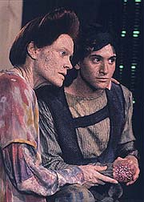
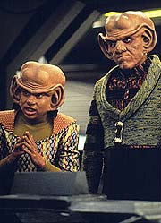
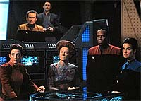
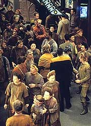

MANCHETE
DO EPISÓDIO
Discussão
do tema imigração faz
da obviedade o centro da história
Episódio
anterior | Próximo
episódio
Sinopse:
Data Estelar: 47391.2.
Um pequeno grupo de alienígenas,
oriundos do quadrante Gama, é resgatado pela estação. Problemas
com o tradutor universal impedem inicialmente a comunicação.
Quando o tradutor consegue "decifrar" a língua dos
alienígenas, a mulher do grupo, Haneek, explica que eles são
chamados de "Skrreeans" e existem mais de 3 milhões
deles do outro lado da Fenda Espacial (chamada por eles de "O
olho do universo"). O grupo é composto somente por
refugiados, com enorme necessidade de auxílio.
Ela explica que as lendas do seu povo dizem que existe uma
"terra prometida" (chamada Kentanna) do outro lado da
Fenda Espacial (digo, do "olho do universo").

Sisko
se oferece para avisar os demais "Skrreeans", ainda no
quadrante Gama, e procurar um planeta para os refugiados. Sisko
também designa Kira para trabalhar junto com Haneek durante toda
a operação. Mais tarde, quando os demais refugiados chegam a
Deep Space Nine, Haneek é apontada como nova líder, por ter
descoberto a Fenda Espacial. Seu povo dá a ela o encargo de
encontrar Kentanna.
Quando Sisko chega com a novidade de que o planeta Draylon II pode
ser um novo lar para os refugiados, Haneek diz que a sua pesquisa
indicou que Bajor é Kentanna.
Haneek faz um pedido formal de santuário ao governo provisório
Bajoriano, que o nega. O governo alega que se a colheita dos
"Skrreeans" falhar, algo bem possível devido às condições
do solo na região que seria designada a eles, Bajor teria mais 3
milhões de pessoas para alimentar e vestir, algo que o planeta não
tem condição alguma de enfrentar. Haneek pede auxílio a Kira,
que acaba ficando do lado do governo. Haneek sente que Kira a
traiu.
Mais tarde, Tumak (o filho de Haneek) leva uma nave, na tentativa
de pousar em Bajor. Ele acaba confrontado uma patrulha Bajoriana e
sua nave explode antes de entrar na atmosfera, selando de fato o
destino dos "Skrreeans".
Sem outra escolha, os "Skrreeans" estão de partida para
Draylon II. Kira vai se despedir de Haneek e a líder diz que o
governo provisório tomou uma decisão baseada em medo e suspeita
e diz que de fato Kira tinha razão, "Bajor não é
Kentanna".
Comentários:
Mais um belo tombo --mais um e fazemos uma trilogia. Peguem as
suas enxadas e vamos conferir esta alegoria de DS9 sobre
imigração.

No
prólogo do episódio temos a impressão de que vamos ter um episódio
calmo sobre a situação interna de Bajor, através de uma
perspectiva diferente, a do músico Varani (um personagem
REALMENTE interessante e, sinto informar, que não voltará
durante a série). De repente surgem aqueles alienígenas
esquisitos e, devido a um mau funcionamento do tradutor universal
(possivelmente a peça de tecnologia --com razão-- mais sacaneada
da história de Jornada), o episódio parece literalmente
"PARAR" até os seus quinze minutos. Obviamente a idéia
do mau funcionamento do tradutor foi para retardar as
"grandes revelações" do episódio para mis tarde, ou
seja: EMBROMAÇÃO COM CARA-DE-PAU!
Após a grotesca cena em que a "barreira de linguagem é
quebrada", uma alegoria sobre imigração começa a se
formar. Ainda que ache o tema e correlatos de real (e atual) relevância,
a execução aqui foi feita (repitam comigo) com "a sutileza
de um estouro de rinocerontes mutantes grávidos".
De forma a passar a mensagem, os "Skrreeans" são
humanos feios (eles não são alienígenas, são humanos feios)
que soltam a pele por onde passam e possuem horríveis traços de
comportamento (exemplificados pelos seus machos
"emocionalmente instáveis"). Ou seja, seres fadados a
sofrer discriminação.

Existe
também um ângulo que estabelece os "Skrreeans" como um
matriarcado poligâmico à procura de uma "terra
prometida", elementos que me fazem ficar preocupado com a
possível contrapartida destes (ou daqueles) na vida real.
Até que a reação dos personagens com relaão aos
"Skrreeans" é interessante, mas, a partir do momento em
que Bajor é reconhecida como a "terra prometida" dos
refugiados, a obviedade da história e da mensagem chegam a
incomodar. A seqüência (quase no final) em que Tumak acaba sendo
morto é tão forçada e manipulativa que chega a ser engraçada,
o exato oposto do efeito intencionado.
A trama do episódio até que foi decente, mesmo que muito lenta
em várias partes e forçada ao extremo em outras, para satisfazer
a "mensagem Trekker da semana" do episódio.
Felizmente os personagens regulares não tiveram a caracterização
alterada para salientar a "mensagem" do episódio, o que
é uma coisa boa. Os personagens responderam dentro da sua
caracterização em relação a situação em que foram imersos
(ainda que a situação pareça essencialmente não-natural,
manufaturada para um fim). Um destaque especial pra Kira, que
continua a brigar com o governo provisório Bajoriano pela
melhoria das condições no seu planeta, mas na situação
apresentada aqui concordou com seu governo quanto à decisão de não
aceitar os "Skrreeans" em Bajor, ainda que obviamente
ela sentisse total simpatia pelos refugiados. Compare a Kira deste
episódio com a Kira de "Progress", da temporada
passada, e vocês perceberão um natural e consistente
desenvolvimento da personagem.
Haneek até que foi uma boa personagem, mal servida em partes como
quando ela descreve os "porquês" da sociedade
matriarcal dos "Skrreeans" ou quando dispara a pérola:
"Nós somos fazendeiros, nos dêem um pedaço de terra".

A
sua natureza direta e objetiva e a sua incapacidade de perdoar
Kira no fim são bem adequadas à situação desesperadora do seu
povo. O que não funciona é a sua "mágica descoberta"
de que Bajor é a "terra prometida" do seu povo,
novamente artificial e manufaturada (a insistência com Bajor,
mesmo frente ao planeta ofertado por Sisko é ainda mais
"misteriosa").
Tumak, por outro lado, foi insuportável de se assistir, com um
andar e uma atitude que pareciam gritar: "Bad boy Skrreean,
watch out!". Não é dada razão alguma para o que ele faz ao
final do episódio (além de ele ser um macho "emocionalmente
instável", é claro).
A direção de Les Landau foi boa, ele não teve culpa pelo
roteiro lento, forçado e manipulativo. O elenco regular esteve sólido,
como de costume, em especial Nana Visitor. Eisenberg, May e
Schallert estiveram bem. Os demais atores convidados foram de medíocre
pra baixo.
Dentre as inúmeras versões do tema de Deep Space Nine, a
tocada por Varani neste episódio é a minha favorita.
O momento em que Odo sonda Nog, tentando descobrir o que Quark
sabe sobre venda de armas, foi excelente. (Ainda que uma referência
inocente neste ponto da série, Quark de fato se envolveria
REALMENTE na venda de armas em "Business As Usual",
da quinta temporada)
Pela primeira vez é citado o relacionamento de Jake com Mardha,
uma garota Dabo, ainda sem conhecimento de seu pai.
Temos aqui mais uma referência feita ao Dominion, estabelecida de
uma forma que atrai mais curiosidade que a anterior, em "Rules
of Acquisition".
"Sanctuary" é mais um episódio contando uma
"mensagem Trekker da semana" e um dos mais extremos
nesse particular tipo de episódio. Felizmente ele não fere
nenhum personagem em sua fúria para passar a mensagem em questão.
Citações
Kira - "I am way beyond
frustrated."
("Estou mais que frustrada.")
Sisko - "It's hard to keep a secret in OPS, especially
when you've been shouting at a monitor for two days."
("É difícil guardar um segredo no OPS, especialmente quando
você está gritando para um monitor por dois dias.")
Trivia:
 Presença de Nog.
Presença de Nog.
Participação de Andrew Koenig (filho
de Walter Koenig, o Chekov da série original de Jornada)
como Tumak.
Presença de Kitty Swink (esposa de
Armin Shimerman, o Quark de DS9) como a Ministra Rozahn. Swink
participaria novamente da série em "Tacking Into The
Wind", da sétima temporada, como a Vorta Luaran.
Participação de William Schallert, o
Nilz Barris do episódio da segunda temporada da série original "The
Trouble With Tribbles".
É citado novamente o nome DOMINION
como uma importante força político-econômica-militar do
quadrante Gama.
A frota de naves dos
"Skrreeans" foi construída por Glenn Neufeld e David
Takemura, após várias visitas a lojas de modelos, inclusive
utilizando miniaturas de carros e tanques de guerra.
O modelo da nave
principal dos "Skrreeans" foi construído por Steven
Berg ("The Abyss") e por Ron Thorton (Foudation Imaging)
e foi utilizado anteriormente em Jornada no episódio da
terceira temporada da Nova Geração "The Booby Trap".
Ficha
técnica:
História de Gabe Essoe &
Kelley Miles
Roteiro de Frederick Rappaport
Direção de Les Landau
Exibido em 29/11/1993
Produção: 030
Elenco:
Avery Brooks como
Benjamin Lafayette Sisko
René Auberjonois como Odo
Nana Visitor como Kira Nerys
Colm Meaney como Miles Edward O'Brien
Siddig El Fadil como Julian Subatoi Bashir
Armin Shimerman como Quark
Terry Farrell como Jadzia Dax
Cirroc Lofton como Jake Sisko
Elenco convidado:
William Schallert como Varani
Andrew Koenig como Tumak
Aron Eisenberg como Nog
Michael Durrell como General Hazar
Betty McGuire como Vayna
Robert Curtis-Brown como Vedek Sorad
Kitty Swink como Minister Rozahn
Deborah May como Haneek
Leland Orser como Gai
Nicholas Shaffer como Cowl